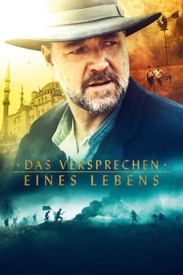
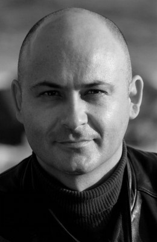
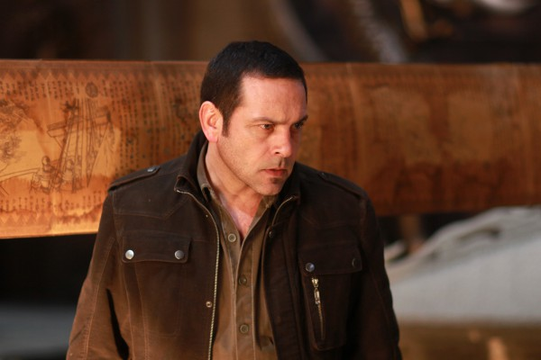

#1713 Das Versprechen eines Lebens
 
 IMDB-Wertung: 7.1 / 10
IMDB-Wertung: 7.1 / 10  Metascore: 50
Metascore: 50 
In den Jahren 1915 bis 1916 kämpften 30.000 Freiwillige aus Australien und Neuseeland im Ersten Weltkrieg für das British Commonwealth of Nations in der Schlacht von Gallipoli. Bei dieser verlor das so genannte ANZAC insgesamt 10.000 Männer auf den Schlachtfeldern gegen das Osmanische Reich. Der australische Farmer Joshua Connor reist also 1919 in die Türkei, um nach seinen drei Söhnen, die als vermisst gemeldet wurden, zu suchen. Doch dabei stößt er auf verstörende Erfahrungen und Geschichten...
Jahr: 2014
Dauer: 111 Minuten
FSK: 12
Land: Australien Studio: UPITonspuren: DTS - ,
Untertitel: Deutsch, Englisch,
Auflösung: 1080p (1920x808) Größe: 8038 MB
Genre: Drama, Krieg
Regisseur: Russell Crowe
Drehbuch: Andrew Knight, Andrew Anastasios
Soundtrack: David Hirschfelder
Darsteller:
 Russell Crowe als Connor
Russell Crowe als Connor Olga Kurylenko als Ayshe
Olga Kurylenko als Ayshe- Yilmaz Erdogan als Major Hasan
- Cem Yilmaz als Sgt. Jemal
 Jai Courtney als Lt Colonel Hughes
Jai Courtney als Lt Colonel Hughes- Dylan Georgiades als Orhan
-  Steve Bastoni als Omer
 Isabel Lucas als Natalia
Isabel Lucas als Natalia- Salih Kalyon als Dr. Ibrahim
- Megan Gale als Fatma
 Ryan Corr als Art
Ryan Corr als Art- James Fraser als Edward
 Ben O'Toole als Henry
Ben O'Toole als Henry Jacqueline McKenzie als Eliza
Jacqueline McKenzie als Eliza- Jack Patterson als Young Art
- Ben Norris als Young Henry
- Aidan Liam Smith als Young Edward
 Damon Herriman als Father McIntyre
Damon Herriman als Father McIntyre Dan Wyllie als Captain Brindley
Dan Wyllie als Captain Brindley- Christopher Sommers als Tucker
 Benedict Hardie als Dawson
Benedict Hardie als Dawson Michael Dorman als Greeves
Michael Dorman als Greeves- Max Benitz als Lieutenant
-  Robert Mammone als Colonel Demergelis
- Deniz Akdeniz als Iman 1919
- Thomas Unger als Thomas
- Ihsan Korkal als Whirling Dervish
- James Elliott als Greek Soldier , uncredited
- Canan Erguder als Red Cross Nurse , uncredited
- Birol Tarkan Yildiz als Turkish Officer , uncredited
- Sophia Forrest als Edith
- Charles Allan als British Soldier, Arrival Hall
- Ali Akdeniz als Turkish Official, Arrival Hall
- Emrah Aksu als Boy Soldier
- Bill Thompson als William
- David Oliver als British Soldier, Topkapi
- Jack Randall als British Clerk
- Asena Gündüz als Omer's Daughter #1
- Aleyna Gündüz als Omer's Daughter #2
- Abdullah Eraslan als Distinguished Turkish Man
- Diogenis Patsouris als Orthodox Priest
- Mustafa Özlük als Turkish Band - Sunnet
- Serdar Ali Sagin als Turkish Band - Sunnet
- Ediz Nidai als Turkish Band - Sunnet
- Zev Eleftheriou als Train Driver
- Jason Honeychurch als Young Veteran
- George Ogilvie als Blind Knife Sharpener
- Stewart Kirwan als Turgut
- Gazi Yalçin als Turkish Band - Gallipoli
 Brad Turner als Turkish Band - Gallipoli
Brad Turner als Turkish Band - Gallipoli
Datei: X:\2014(N-Z)\Versprechen eines Lebens, Das (2014, FSK, 1920x808).mkv seit 10.08.2015
Festplatte: HD 2013(I-Z)-2014(A-Z)
 Es gibt insgesamt 163 Filme in der Gruppe '2014(N-Z)'
Es gibt insgesamt 163 Filme in der Gruppe '2014(N-Z)'